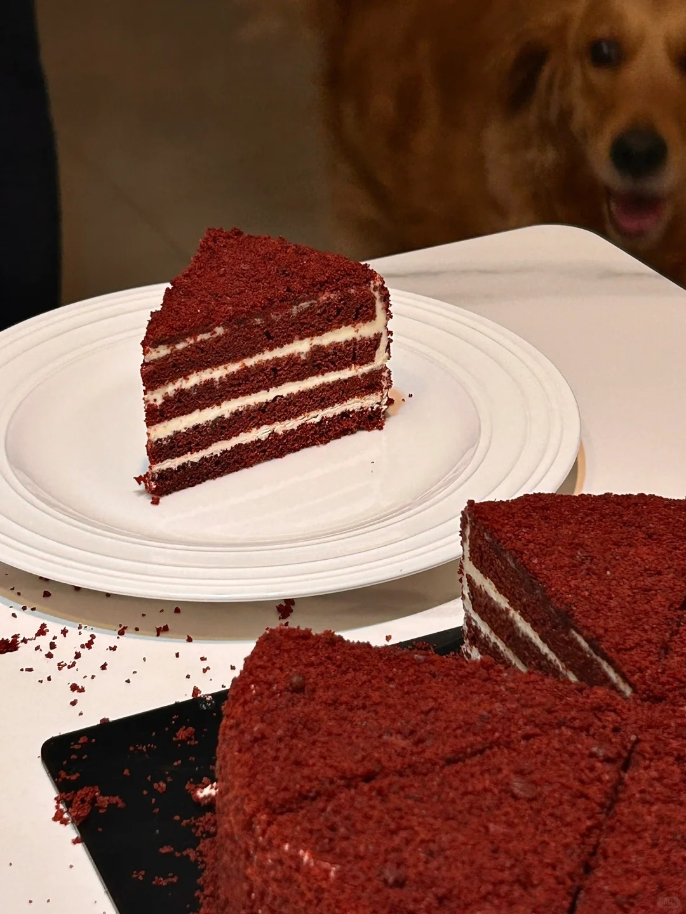
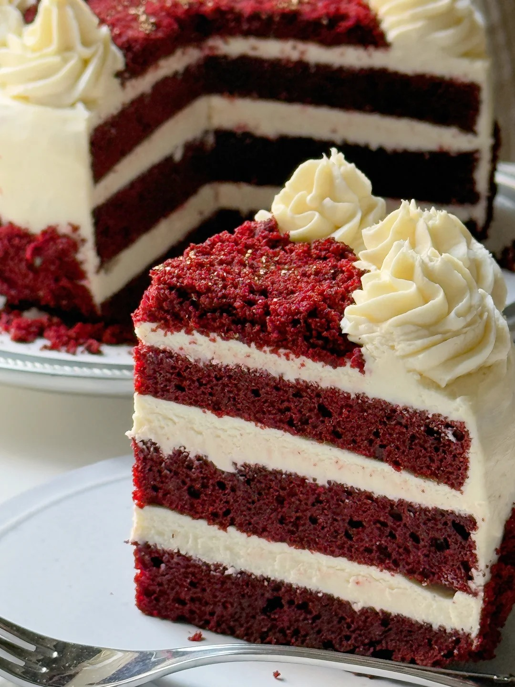
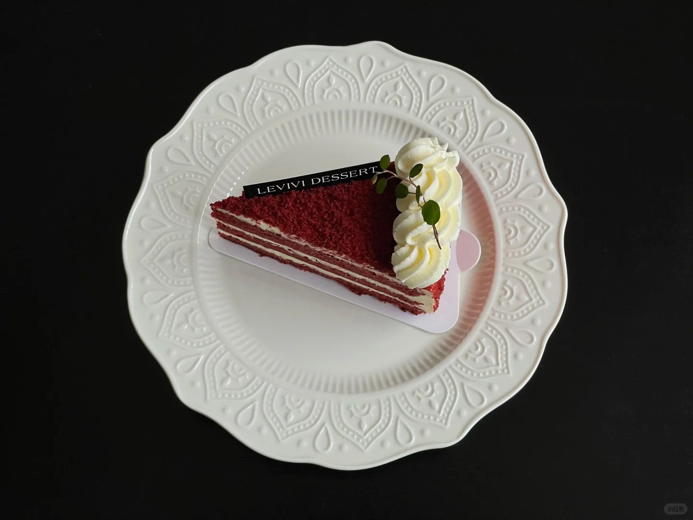

红丝绒蛋糕



红丝绒蛋糕是美国南部一款极具特色的甜品，口感细腻柔软，具有丝绒般的触感，甜度适中，带有微醇的可可芬芳，搭配浓郁的奶油霜夹心，口感丰富，令人回味无穷。制作流程通常先将蛋黄蛋白分离，蛋黄中加入牛奶、玉米油等搅拌均匀，再加入过筛的低粉、红曲粉、可可粉等拌匀；蛋白加糖打发后与蛋黄糊混合，倒入烤盘中烤制。烤好后放凉，可涂抹奶油奶酪霜等进行装饰。 红丝绒蛋糕起源说法不一，有一种富有戏剧性的说法是它起源于纽约的 Waldorf-Astoria 酒店。1959 年左右，一位女客人因酒店有偿提供蛋糕配方而一怒之下将其公布，使红丝绒蛋糕闻名于世。也有说法认为它是美国南部的传统甜点，二战期间，面包师用甜菜汁增加蛋糕颜色，而德克萨斯州的 Adams Extract 公司在大萧条时期将其推广至美国各地。
制作方法：